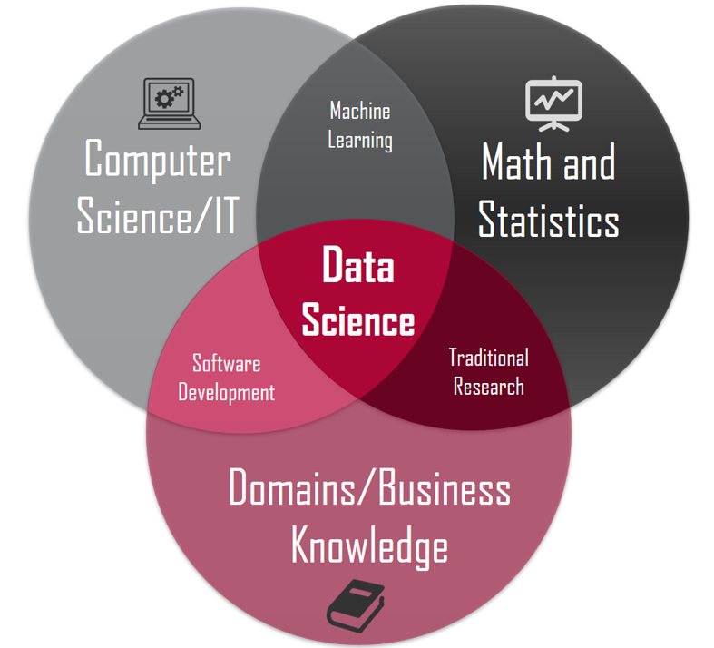

01 - Data Science & Jupyter Notebook#
Welcome to the journey to Spatial Data Science/GeoComputation 1. For the first week, we will cover the following three topics:
Introduction to data science and spatial data science
Required software setup
Navigate a Jupyter Lab environment
Table of Contents#
Data Science and Spatial Data Science
Conda and Jupyter Setup Instructions
Navigate the Jupyterlab Environment
Install Packages
Data Science and Spatial Data Science#
Data Science#
In our modern world, we confront abundant datasets, which are valuable for advancing our scientific goals. But we need the computational skills to make full use of vast amount datasets.
Data Science is a child of statistics and computer science.

A few popular jokes:
“A data scientist is a statistician who lives in San Francisco.”
“A data scientist is a statistician who is useful.”
What are the most in-demand skills for data scientists in the job market?
If you want to know what Python skills are for a data scientist, check out Python Data Science Handbook
GeoSpatial Data Science#
In the environmental science field, more Earth observation data are being collected each day. A few examples:
Many satellites are in space and constantly collecting data about our planet, Earth, each day. You can find more on NASA Earth science missions.
Many large network field data are being collected, two examples: The National Ecological Observatory Network, or NEON is collecting ecological data from sites across the continental scale.
Ground sampling data, for example, NYC open data portal
Spatial Data Analytics: The What, Why, and How?
Spatial data science is an emerging field that combines data science techniques with geospatial analysis to understand and solve problems related to the location and spatial relationships of phenomena on Earth. It involves using tools and methods to analyze, visualize, and interpret spatial data, revealing patterns, trends, and insights that can inform decision-making in various sectors.
Spatial data science merges several areas, including:
Geospatial Analysis: The study and interpretation of geographic data through spatial algorithms.
Machine Learning: The use of statistical models and machine learning algorithms to make predictions or discover patterns in geospatial data.
Data Visualization: Creating maps, charts, and other visualizations that represent the spatial distribution of data.
Spatial Statistics: Applying statistical techniques to understand spatial patterns and relationships.
For this class, we will learn basic Python skills to obtain, analyze, and visualize those large environmental datasets.
It will be beneficial and helpful if you have or are taking a remote sensing course. Otherwise, you can learn some background on remote sensing by watching some online turorials.
What is the average salary for a geospatial data scientist??
Conda and Jupyter Setup Instructions#
Basic Terminology#
Python#
A software is distributed as a series of libraries that are called within your code to perform certain tasks.
There are many different collections, or distributions of Python software. Generally you install a specific distribution of Python and then add additional libraries as you need them.
There are also several different versions of Python. Support for Python 2 ended in 2020, so you should use Python>=3
Jupyter Notebook#
Jupiter Notebook is an open-source web application that allows you to create and share documents that contain live code, equations, visualizations and narrative text.
Contain live code, equations, visualizations and explanatory text such as figures, links and equations
Can be executed perform the data analysis in real time
“Jupyter” is a loose acronym meaning Julia, Python, and R. also supports many other languages.
The Jupyter Notebook App allows you to edit and run your notebooks via a web browser.
The application can be executed on a PC without Internet access, or it can be installed on a remote server, where you can access it through the Internet.
Jupyter Lab#
JupyterLab is the latest web-based interactive development environment for notebooks, code, and data. Its flexible interface allows users to configure and arrange workflows in data science, scientific computing, computational journalism, and machine learning. It provides flexible building blocks for interactive, exploratory computing.
We will use Jupyter lab for this class.
Anaconda (not recommended)#
Anaconda is a data science platform that comes with a lot of packages/libraries. Anaconda is a distribution of the Python and R programming languages for scientific computing (data science, machine learning applications, large-scale data processing, predictive analytics, etc.), that aims to simplify package management and deployment. Anaconda offers the easiest way to perform Python/R data science and machine learning on a single machine.
You can install Python and Jupyter notebook and conda by installing Anaconda. It particularly works better for beginners.
The list of packages included can be found here.
Miniconda (not recommended)#
Miniconda is a free minimal installer for conda. It is a small, bootstrap version of Anaconda that includes only conda, Python, the packages they depend on, and a small number of other useful packages, including pip, zlib and a few others. If you don’t want Anaconda to take a lot of space, use minconda.
Miniforge (Recommended)#
Miniforge is a minimal installer for Conda that uses the conda-forge channel by default instead of Anaconda’s defaults. This gives you fresher packages and broader coverage, especially for scientific and geospatial software.
Like Miniconda, it only installs Conda + Python + a few basics.
In this class, we recommend you install miniforge
Conda#
Setup your environment#
Install Conda#
Download and install the Python 3 version of conda.
Setup SDS Environment#
Start -> Anaconda-> Anaconda Prompt. Under Anaconda Prompt window:
Create your own environment use -
conda create -n sds python=3.13Activate your environment use conda -
conda activate sds
To install Jupyterlab, under the Anaconda Prompt (Windows) or Terminal (MacOS/Linux), type#
I suggest using mamba to install packages, it does the same thing as conda, but work much faster than conda. To install mamba:
conda install -n base -c conda-forge mamba
Now you can install Jupyter Lab using mamba:
mamba install -c conda-forge jupyterlab
Install Python Pacakges#
There are two basic approaches to installing Python packages
Using pip (standard way)#
pip install package_namePrefer pip for general packages (wider availability).
Using conda/mamba (if you use Anaconda/Miniconda)#
mamba install pacakage_namemamba install pandasmamba install numpymamba install matplotlibmamba install hvplot